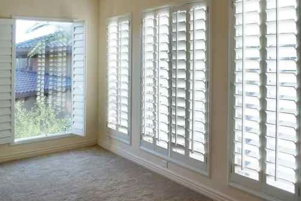
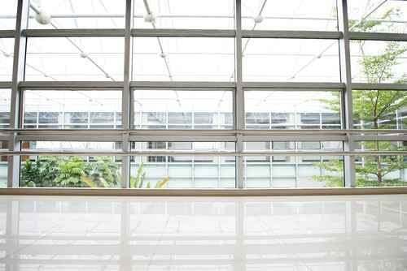
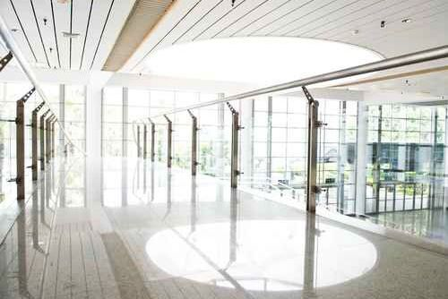

Veja a aplicação.
Imagine o seu espaço.
Estas imagens ilustrativas, publicadas no website oficial, ajudam a explicar diferentes aplicações. Não são apresentadas como portefólio de obras da empresa.
6 referências visuais

Divisórias e portas
Separação de espaços interiores com portas e painéis de vidro.

Resguardo de duche
Uma referência visual de vidro aplicado numa casa de banho.

Janelas em casa
Uma referência de composição de janelas num espaço residencial.

Abertura para o exterior
Vãos e janelas num interior luminoso.

Vãos de maior dimensão
Uma referência visual de uma fachada envidraçada.

Vidro em espaços amplos
Uma referência de painéis e portas num espaço de circulação.
Encontrou uma referência
próxima do que procura?
Indique a aplicação ao contactar a equipa. A solução concreta depende do espaço e do trabalho a realizar.
Preparar o contacto